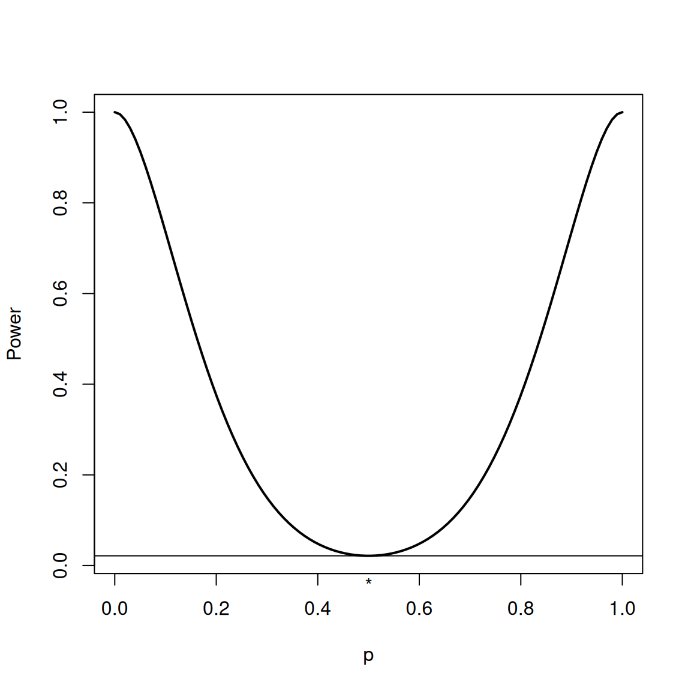
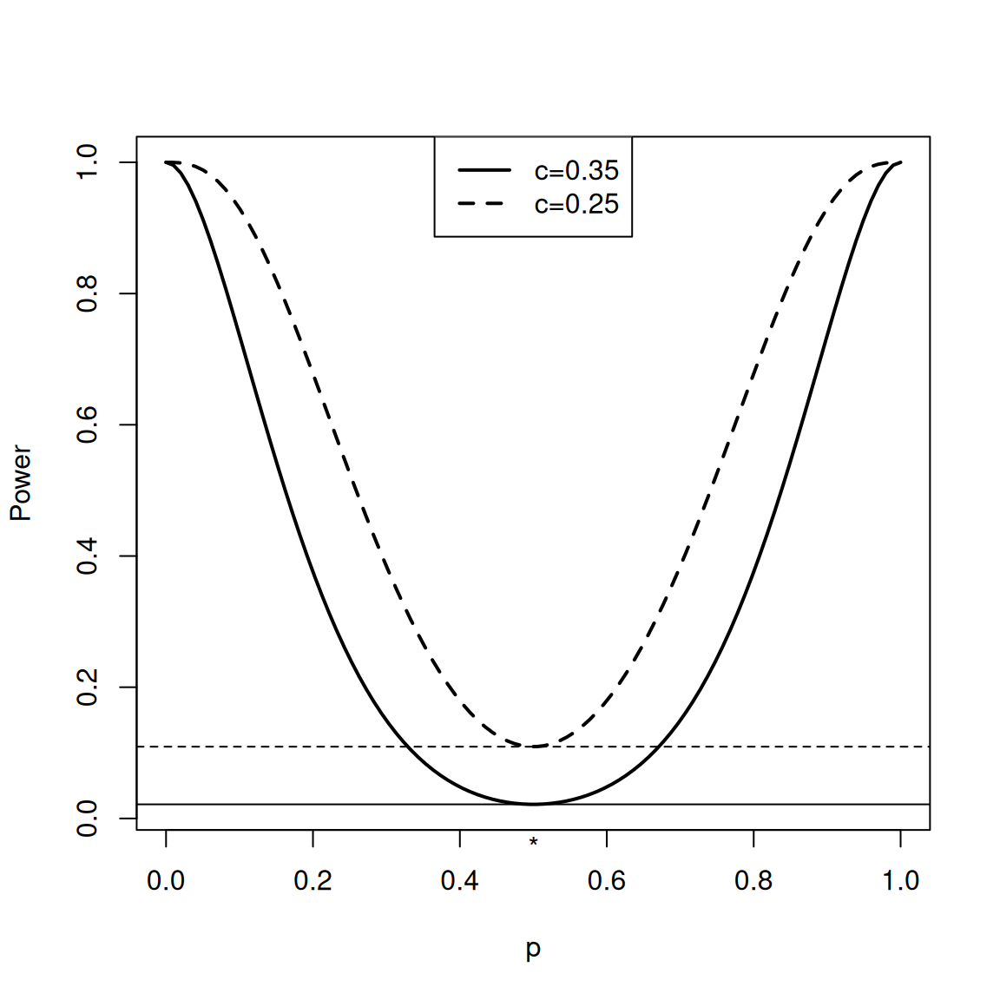

Hypothesis Testing: Decision Perspective
We now turn to the other strategy for testing a hypothesis, namely assume that we are going to make a decision: reject the null or not. This is the Neyman-Pearson approach (as opposed to Fisher, who focused only on the null hypothesis and developed \(p\)-values).
All statisticians agree that in practice, reporting a p-value is preferred over just reporting simply “we reject the null”. A p-value gives you a measure of how much evidence there is against the null: your decision “reject the null” might correspond to a p-value of 0.001 or a p-value of 0.05; those have quite different amounts of evidence.
However, the framework of a decision rule is absolutely fundamental to thinking about the testing problem. Neyman and Pearson defined the notion of an alternative hypothesis, so they said it wasn’t enough to reject the null, but when you did that, you decided on an alternative. This distinction allows us to emphasize the probabilities of the errors that are possible, which are of two types: we might reject a true null (type I error), or we might accept a false null (type II error).
Further, we will see that there are direct relationships of decision rules based on a test statistic \(T\) and p-values based on the same test statistic \(T\). For this reason, the way we think about testing is a hybrid of these two approaches, and you have to understand both to understand hypothesis testing in practice.
Decision Rules
As we said above, making a decision to reject or not reject the null requires us to make a cutoff on how big \(T\) has to be to reject the null.
The framework for this paradigm, developed by Jerzy Neyman and Egon Pearson, formalized this as a decision rule: \[\begin{cases} \text{Reject }H_0 & \text{if }T>c\\ \text{Do not reject }H_0 & \text{if }T\leq c \end{cases} \]
Notice \(c\) is a cutoff we choose before ever seeing any data, so it is not random, and is called the critical value of the test.
Note
We have defined our rule as reject if \(T>c\) rather than \(T\geq c\). If \(T\) is a continuous random variable, then both are equivalent. If \(T\) is discrete, then either would work as long as you are consistent (and careful!) when you calculate what you want your \(c\) to be and how you make decisions.
P-values, on the other hand, are always defined with a \(\geq\) \[p-value= P_{H_0}(T\geq t_{obs}),\] which is important for discrete random variables because it means you include the value you saw in the calculation!
Definition 1 (Rejection Region) The set of values of the data that leads to the rejection of the null hypothesis is called the rejection region of the test. If our data \(X\) lies in the rejection region, we will reject our null, otherwise we will not.
The rejection region is in terms of our actual data, rather than our test statistic, but it will of course depend on our critical value \(c\). Like \(c\) it is not random.
Note
Instead of “Do not reject \(H_0\)”, you will sometimes see this written as “Accept \(H_0\)”. However, most statisticians don’t like the language of “accept the null” since it seems to equate to “the null is true” (see discussion above for p-values).
Any such test can be evaluated in terms of the four possible outcomes:
| Reject \(H_0\) | Don’t Reject \(H_0\) | |
|---|---|---|
| \(H_0\) is True | Type I Error | Correct Decision |
| \(H_0\) is not True | Correct Decision (Power) | Type II Error |
While there are 4 possible combinations, we only care about errors, which simplifies to three possible outcomes from our decision rule, \[(\text{CORRECT}, \text{Type I Error}, \text{Type II Error})\]
Note
Sometimes Type I errors are called false positives and Type II errors are called false negatives.
This language comes from the fact that null is associated with the default; if we feel the null is compatible with having created the data that would be a negative result, i.e. a lack of a result. Thus rejecting the null is associated with a positive result, where positive is in terms of advancing or changing our understanding of an issue. This terminology isn’t a judgment or moral position on the specific conclusions, however. Rejecting the null might mean that a study has revealed a deleterious effect or the existence of a unfortunate societal behavior.
Which outcome we get is a random event, so we can calculate the probability of these outcomes.
This leads to important terminology to describe the probability of a test to make these types of errors.
Definition 2 (Significance Level) The significance level (\(\alpha\)) of a test is the probability of the test committing a Type I error, \[P_{H_0}(\text{Reject } H_0)=P_{H_0}(T>c)\]
If we run a test that has significance \(\alpha\) and reject our null hypothesis, then we will often say that we “reject the null hypothesis at level \(\alpha\)” or that the result “is significant at level \(\alpha\)”.
Note
Notice, that like our p-value calculation, calculating the significance level only requires knowledge of the null distribution of \(T\).
Example of a decision rule
For our coin flip example, we can consider the result of some choices of \(c\)
| Number of Heads (\(X\)) | \(T=|X/n-0.5|\) | \(c\in[0.4,0.5)\) | \(c\in [0.3,0.4)\) | \(c\in[0.2,0.3)\) |
|---|---|---|---|---|
| 0 | 0.5 | Reject | Reject | Reject |
| 1 | 0.4 | Don’t Reject | Reject | Reject |
| 2 | 0.3 | Don’t Reject | Don’t Reject | Reject |
| 3 | 0.2 | Don’t Reject | Don’t Reject | Don’t Reject |
| 4 | 0.1 | Don’t Reject | Don’t Reject | Don’t Reject |
| 5 | 0.0 | Don’t Reject | Don’t Reject | Don’t Reject |
| 6 | 0.1 | Don’t Reject | Don’t Reject | Don’t Reject |
| 7 | 0.2 | Don’t Reject | Don’t Reject | Don’t Reject |
| 8 | 0.3 | Don’t Reject | Don’t Reject | Reject |
| 9 | 0.4 | Don’t Reject | Reject | Reject |
| 10 | 0.5 | Reject | Reject | Reject |
If \(c=0.35\) for example, then
Rejection Region: The \(X\) for which we will reject will be those for which \(T>c\), and is given by \(\{0,1,9,10\}\)
Significance Level (\(\alpha\)) This is the probability of a type I error, \[P_{H_0}(T > 0.35) = P_{H_0}(X\in\text{Rejection Region})= 0.021.\]
Power
What about the probability of Type II error? This is the probability of not rejecting when the null is not true. This leads us to the notion of an alternative hypothesis, notated as \(H_a\) (you will also see \(H_1\) as the alternative hypothesis in some books).
Sometimes we will have a specific alternative hypothesis. Suppose, for example, in our coin example, we know there are two types of coins, some that have probability of heads \(\pi=0.5\), and others with \(\pi=0.7\). I want to decide whether the coin I have is one of the fair coins. In this case we have a clear alternative hypothesis \[H_a: \pi=0.7\] This is often called a simple alternative.
This leads us to a definition of power to describe our probability of success if the alternative is true:
Definition 3 (Power) Let \(\beta\) refer to the probability of Type II error of a test, \[\beta=P(\text{Type II error})=P_{H_a}(T\leq c)\] The power of a test is the probability that the null hypothesis is correctly rejected when it is false, and is therefore given by \[P_{H_a}(\text{Reject } H_0 )=P_{H_a}(T> c)=1-P(\text{Type II error})\]
Coin Example with Specific alternative
For our example, if we consider the alternative \(\pi=0.7\), we get the probability of a Type II error is: \[\beta=P_{\pi=0.7}(T \leq 0.35) = 1-P_{\pi=0.7}(X\in\text{Rejection Region})= 0.851,\] or in terms of power, \[P_{\pi=0.7}(T > 0.35) = P_{\pi=0.7}(X\in\text{Rejection Region})= 0.149,\]
So we see that with this choice of \(c=0.35\) we have reasonably low Type I error, but we are not very likely to reject the null if the truth was \(\pi=0.7\) (low power) so we are likely to make a Type II error.
Composite Alternatives and Power Curves
However, many times we will not have a specific alternative. If I don’t know there’s a specific alternative coin, then I just have that \[H_a: \pi\neq 0.5\] or for our two population comparison, \[H_a: \mu_X\neq \mu_Y\] We often call these composite alternatives.
The alternative space is just the space if all possible parameters that are not the null value, and you can’t calculate a probability for the entire alternative space – probabilities depend on the specific value of the parameter.
Note
We can also have composite nulls. This is most common with one-sided tests, e.g. \(H_0: \mu\leq 0\), which I will not spend much time on, but the book discusses. But even consider our null \[H_0:\mu_x\neq \mu_y\] In terms of our parameters \((\mu_x,\mu_y)\), there are a lot of values that satisfy the null. We have just been able to avoid this issue by picking a test statistic whose distribution only depends only on \(\Delta=\mu_x-\mu_y\). We have basically reparameterized the problem into a simple null hypothesis by making it a problem that about a single parameter \(\Delta\).
What we can do is pick a specific choice \(\pi\in H_a\) for our alternative, and calculate the probability of that.
In fact we can express this as a curve of all possible values of \(\pi\), \[power(\pi)=P_\pi(T > 0.35)\]
Notice that the value at \(\pi=0.5\), this is actually in the space of our null hypothesis, not the alternative, and so the value of the power curve will be our significance level (noted with a “*” in the plot).
Tradeoff of Power and Type I error
We could compare this to a different choice of \(c=0.25\)

We see that our significance (Type I error) will increase to \(0.11\), but we also have increased power (lower Type II error) for all the possible alternatives. So we can’t uniformly make both errors small – we have to make a tradeoff.
Generally, the lower we make the Type I error, the lower the power will be as well.
Neyman-Pearson Paradigm for Choosing the Rejection Region
A quantitative strategy for choosing our critical value \(c\) (equivalently our rejection region) is to select it to maximize the probability of being correct and minimize the probability of being wrong. However, we have seen that we can’t uniformly make both types of error small.
The framework introduced by Neyman and Pearson and adopted by all of statistics, called the Neyman-Pearson paradigm, is to fix a significance level \(\alpha\in(0,1)\) that is the maximum level of type I error we are willing to allow (usually 0.05 or 0.01). Then we choose \(c\) so that we guarantee that the probability of our type I error is \(\leq \alpha\). We call it an \(\alpha\)-level test, and a proposed \(\alpha\)-level test is only considered valid if it controls the type I error at the stated level of \(\alpha\).
Technically, we could satisfy this criterion by many possible \(c\) values so long as they have type I error less than \(\alpha\). But since we’ve seen that our power will increase as we increase our significance level, we will pick the \(c\) to get the largest possible significance level that still satisfies \(\leq \alpha\).
Examples of choosing \(c\).
Coin Toss
We can calculate the significance level for different choices of \(c\). Notice that the correct \(c\) will depend on what our \(n\) is.
| \(c\) | Significance level | |
|---|---|---|
| \(n=10\) | \(n=20\) | |
| 0.45 | 0.002 | 1.91e-06 |
| 0.35 | 0.021 | 4.02e-04 |
| 0.25 | 0.109 | 0.012 |
| 0.15 | 0.344 | 0.115 |
| 0.05 | 0.754 | 0.503 |
If we choose \(\alpha=0.01\), then for \(n=10\) we would pick \(c\in[0.4,0.5)\) (because of the discreteness, any \(c\) in this region would lead to the same set of rejections). For \(n=20\), we would pick \(c \in [0.3,0.35)\). So the right cutoff value will depend on our sample size.
Two populations
Since our test statistic \(T\) in this setting has a continuous distribution, we know that we can get exactly \(\alpha\). So we want to find the \(c\) so that \[P_{H_0}(T>c)=\alpha\]
\[ \begin{aligned} P_{H_0}(T>c)&=P_{H_0}(|\bar{X}-\bar{Y}| > c)\\ &=P_{H_0}\left(\frac{|\bar{X}-\bar{Y}|-(0)}{\hat{SE}(\bar{X}-\bar{Y})} > \frac{c}{\hat{SE}(\bar{X}-\bar{Y})}\right)\\ &\approx 2 P_{H_0}\left(Z > \frac{c}{\hat{SE}(\bar{X}-\bar{Y})}\right) \quad\text{where }Z\sim N(0,1)\\ &=\alpha\\ \end{aligned} \] This implies that \(\frac{c}{\hat{SE}(\bar{X}-\bar{Y})}\) should be the \(1-\alpha/2\) quantile of a \(N(0,1)\), \[\begin{gathered} \frac{c}{\hat{SE}(\bar{X}-\bar{Y})}=z_{\alpha/2}\\ \Rightarrow c=z_{\alpha/2}\hat{SE}(\bar{X}-\bar{Y}) \end{gathered} \]
Note
Notice that since we are choosing \(c\) to guarantee our Type-I error is less than \(\alpha\), our critical value \(c\) will always depend on our choice of \(\alpha\) as well as our sample size \(n\).
Relationship to P-values
P-values are themselves a kind of statistic, because they are functions of the data. Suppose we wanted to make a test based on the p-value as our test statistic. We could make a decision rule \[\begin{cases} \text{Reject }H_0 & \text{if }\text{p-value}<c\\ \text{Do not reject }H_0 & \text{if }\text{p-value}\geq c \end{cases} \]
If we have correctly identified the null distribution of \(T\), then the null distribution of a p-value is \(U(0,1)\). This means the Type-I error of the above test is \[P_{H_0}(\text{p-value}<c)=P(U(0,1)<c)=c\] So we would select \(c=\alpha\), \[\begin{cases} \text{Reject }H_0 & \text{if }\text{p-value}<\alpha\\ \text{Do not reject }H_0 & \text{if }\text{p-value}\geq \alpha \end{cases} \] This test has significance level \(\alpha\) and is a valid \(\alpha\)-level test.
Furthermore, suppose we develop a test from scratch based on the same test statistic \(T\), i.e. pick a critical value \(c'\) that gives us significance level \(\alpha\), \[P_{H_0}(T>c')=\alpha.\] But the p-value is a negative monotone transformation of \(T\), meaning that p-value=\(f(T)\) for an \(f\) defined in our p-value section. So we have that \[P_{H_0}(T>c')=P_{H_0}(\text{p-value}<f(c'))=\alpha\] We know from above, this means \(f(c')=\alpha\), so \(c'=f^{-1}(\alpha)\). Meaning we can go back and forth between a test based on \(T\) and a test based on our p-value, and they will be equivalent, i.e. a test based on \(T\) will make the exact same rejections as a test based on the p-value.1
Note
Note we always have this behavior if we switch between two statistics that have a monotone relationships: if we switch from \(T\) to another statistic that is a monotone transformation of \(T\), then we will clearly need a new \(c\) cutoff value, but the resulting tests will give exactly equivalent decisions and p-values.
Furthermore, we said that by convention we define our test statistics so that larger values of \(T\) imply evidence against our null. But that is clearly not the case with the p-value! But having larger \(T\) be more evidence against the null is just a convention; it is not wrong to have a test statistic go in the opposite direction.
So in this way, we see that any test based on \(T\) can be equivalently stated as a test on the corresponding p-value. This is how most people work with testing. They find a p-value based on a test statistic \(T\), and then they report the p-values, but also make decisions based on the p-value.
For example, there is a tradition of setting the \(\alpha\) level to 0.01 or 0.05, and calling a result significant if its p-value is less than one of these two values. You will often see statements like “this result is significant at level 0.05 (p-value 0.03).” So it is common to both assess whether the result meets standard levels of significance from a decision rule perspective and report the precise p-value obtained.
Summary
Now that we’ve laid out the framework of hypothesis testing, let’s review what is needed to make a hypothesis test.
A null hypothesis \(H_0\) that we want to test
A test statistic \(T=T(X_1,\ldots,X_n)\) that quantifies the evidence for/against the null.
The null distribution of \(T\)
Once we have those pieces in hand, we can run our test either by
- calculating the p-value of the \(T\) and rejecting for \(\text{p-value}<\alpha\)
- determining the \(c(\alpha)\) that is our cutoff or critical value and rejecting for \(T>c(\alpha)\).
References
Agresti, Alan, and Maria Kateri. 2021. Foundations of Statistics for Data Scientists. Chapman; Hall/CRC.
Rice, John A. 2006. Mathematical Statistics and Data Analysis. 3rd ed. Duxbury Press.
Footnotes
In fact, you can define the p-value (based on a test statistic \(T\)) as the smallest level \(\alpha\) for which we would reject the null hypothesis based on this data. While not originally the definition of Fisher, this is now considered the formal definition of a p-value. ↩︎